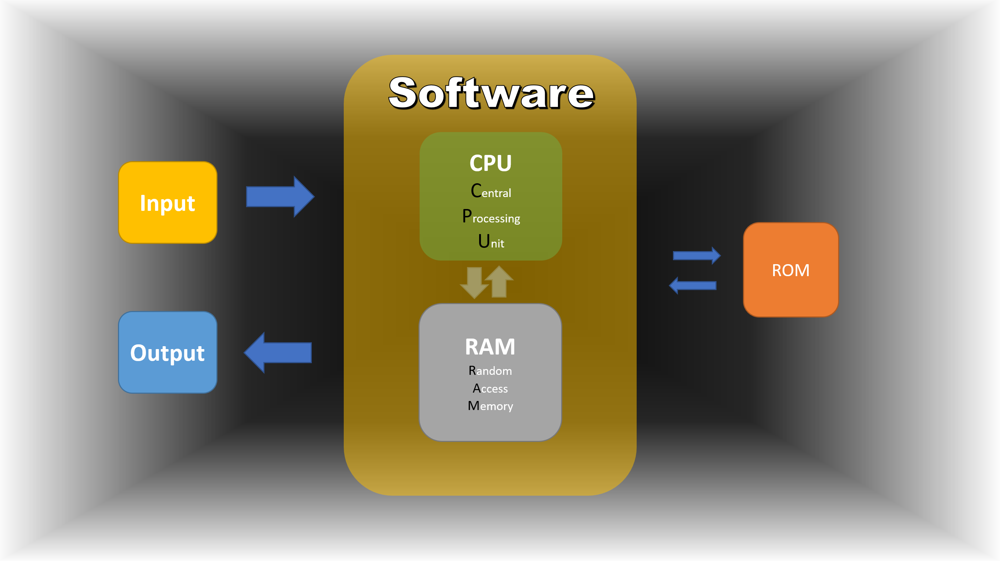
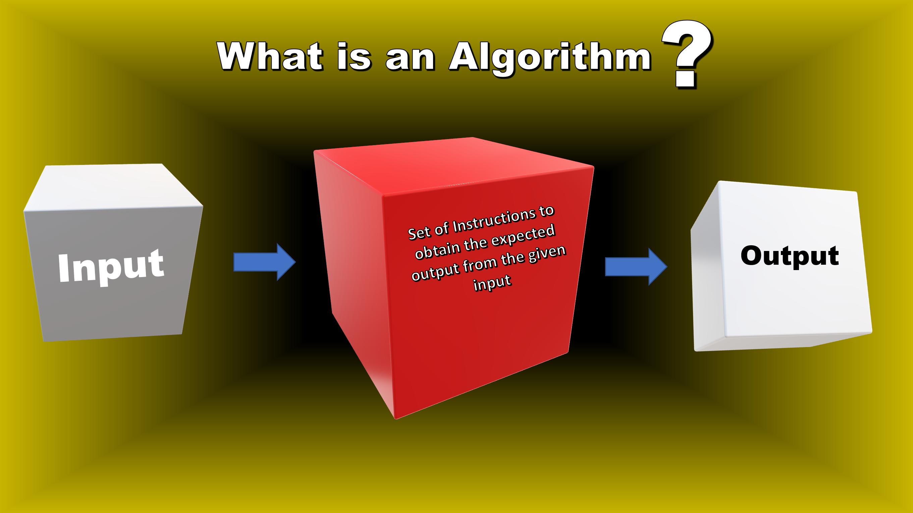

Python Beginner Level
What is Computer?
A computer works by processing data inputs and producing outputs according to a set of instructions, called a program. These programs are executed by the computer's central processing unit (CPU), which performs basic arithmetic, logical, and control operations. The data and programs are stored in the computer's memory, which is made up of either random access memory (RAM) or read-only memory (ROM). RAM is a type of volatile memory that stores data temporarily and is wiped clean when the computer is turned off. ROM, on the other hand, is non-volatile memory that stores permanent data and instructions. The computer's input and output devices, such as the keyboard, mouse, and monitor, allow users to interact with the computer and receive results. The computer also has a number of other components, such as the motherboard, hard drive, and power supply, that work together to enable it to perform its functions. Overall, a computer works by receiving inputs, processing them using the CPU and memory, and producing outputs through its output devices, all under the control of its software and operating system.
Users see computers as a useful tool for productivity, communication, entertainment, or educations or as a complex machine that can solve the problems. Whenever the user have problems that can't be solved by the current programs, they turn to programmers which can write program to solve the users problem.
Input, Processing, and Output
Computer programs performs the following three steps:
- Input: This refers to the data or information that is entered into a computer program. In Python, you can obtain input from the user using the
input()function. In computer science, input refers to the data or information that is entered into a computer program for processing. The input can come from various sources, such as a keyboard, mouse, touch screen, microphone, file, or network. The input is used by the program to perform specific actions or computations and produce the desired output. The type, format, and content of the input are important considerations in the design and implementation of a program, as they can affect the accuracy and efficiency of the processing. The input is usually validated to ensure that it meets the requirements of the program and to prevent errors or unexpected behavior. - Processing: This refers to the manipulation of the input data to produce a desired outcome. In Python, you can process the input data using various operations, functions, and control structures.
- Output: This refers to the result of the processed data. In Python, you can display output to the user using the
print()function. In computer science, output refers to the result generated by a computer program after processing data or performing a set of instructions. The output can be displayed on a screen, printed on paper, saved to a file, or sent to another device. It can take many forms, including text, numbers, images, sounds, or other media. The output of a program is the end product of the computation process and provides information or feedback to the user about the program's execution. The type, format, and content of the output are determined by the programmer and are often specified in the program's design and implementation.
For example, if we type print("Hello World!"); in the text editor, such as Notepad, Sublime Text, Visual Studio code, or an online compiler and click "Run" we see that results will be printed on the screen which we call it output.
print("Hello World")
# output will be --> Hello World
Algorithm
An algorithm is a step-by-step procedure for solving a problem or achieving a specific task, expressed in a finite sequence of instructions. It is a well-defined computational procedure that takes some value as input and generates some value as output, with a finite number of steps. Algorithms are at the core of computer science and play a crucial role in many applications, including search engines, recommendation systems, and data compression. Algorithm exist in our daily life, outside of our computers. For example, when we follow the steps for a recipe, or a manual to put together a chair or a table.
Program
A program in computer science refers to a set of instructions that a computer follows to perform a specific task or set of tasks. It is a software application that is written in a specific programming language, such as Python, Java, or C++, and executed by the computer to solve a particular problem or accomplish a specific goal. Programs can range from simple scripts that automate routine tasks to complex systems that run large-scale operations. In computer science, writing and understanding programs is a key skill, and the development of efficient and effective programs is a central focus of the field.
Python
Python is a high-level, interpreted, and general-purpose programming language. It was created in the late 1980s by Guido van RossumGuido van Rossum and is designed to have a simple and straightforward syntax, making it a great language for beginners to learn. Python is widely used for various applications, including web development, scientific computing, data analysis, artificial intelligence, and more. It also has a large and supportive community of users and developers, who have created a large number of libraries and modules to extend its functionality.
The Ways you can run Python code
There are different ways that you can write you Python program, below we can see some of the methods that we can run our Python code:
- Interpreter: Open the terminal or command prompt and type python to start the Python interactive interpreter. You can then type Python code and see the result immediately.
- Script File: You can write Python code in a file with a .py extension and run it by typing python filename.py in the terminal or command prompt.
- Integrated Development Environment (IDE): There are several IDEs available for Python such as PyCharm, IDLE, Jupyter Notebook, Visual Stuido code, etc. that provide a user-friendly interface to write, run and debug code.
- Online Compilers: An online compiler is a web-based tool that allows you to write, compile, and execute code in a particular programming language. Online compilers are convenient as they don't require you to install anything on your local machine, and they're accessible from anywhere with an internet connection. With an online compiler, you can write code in a web-based editor, and the compiler will translate that code into machine-readable instructions. You can then run the compiled code and see the output right in your browser. Online compilers are commonly used for learning and experimenting with new programming languages, testing small snippets of code, and sharing code with others. Some online compilers also offer additional features, such as syntax highlighting, debugging tools, and collaboration tools. There are some online compilers such as Repl.it, Trinket, Jupyter Notebook, PythonAnywhere, codePen, that allow you to write, run and share Python code online without having to install anything locally. and these online comilers are the most rated online compiler for Python programming language.
- Repl.it - A web-based development environment that supports many programming languages including Python. It offers a collaborative workspace, a code editor, and an interactive interpreter in the same environment.
- Trinket - A browser-based platform that provides an environment to run, test, and share Python code. It's especially popular among educators and students.
- Jupyter Notebook - An open-source web application that allows you to create and share documents that contain live code, equations, visualizations, and narrative text. It supports many programming languages, including Python.
- PythonAnywhere - A web-based platform that provides an environment for writing and running Python code. It offers a powerful code editor, a shell terminal, and the ability to run code on a remote server.
- CodePen - A popular online code editor that supports many programming languages including Python. It allows you to write, test, and share your code in the browser, and it's commonly used by front-end developers.
An example of an online compiler
In the above pyton Interpreter you can type your code and run it
Variables
In Python, a variable is a named storage location that can contain data, and can be referenced by name in a program. In other words, a variable is a way to store and manipulate values in a program. A variable can be defined by simply assigning a value to a name using the equals (=) operator. For example:
x = 5
y = "Hello, World!"
z = [1, 2, 3]
Here, x is a variable that holds an integer value 5, and y is a variable that holds a string value "Hello, World!", and z is a variable in Python, and it is assigned the value of a list [1, 2, 3].
Variables in Python do not need to be declared with their data type, as Python is a dynamically-typed language and will automatically determine the data type based on the value assigned to the variable.
It is good practice to choose descriptive names for your variables, as this makes it easier to understand the purpose of each variable in your code. In Python, variable names can consist of letters, numbers, and underscores, but they cannot start with a number.
In addition to simple variables, Python also supports other more advanced data types such as lists, dictionaries, and tuples, which allow you to store multiple values in a single variable.
Types of variables in Python
- Integer: A whole number, such as 1 , 10 , or -100
- Float: A floating-point number, such as 1.0 , 10.5 , or -100.25
- String: A sequence of characters, such as "Hello, World!"
- Boolean: A value that can be either True or False
- List: An ordered collection of values, which can be of different data types.
- Tuple: An ordered, immutable collection of values, which can be of different data types.
- Dictionary: An unordered collection of key-value pairs, where each key is unique.
- Set: An unordered collection of unique values.
- None: A special value that represents the absence of a value.
In Python, the type of a variable is dynamically determined based on the value that is assigned to it. You can use the type function to determine the type of a variable:
x = 5
print(type(x)) # Output: class 'int'
y = "Hello, World!"
print(type(y)) # Output: class 'str'